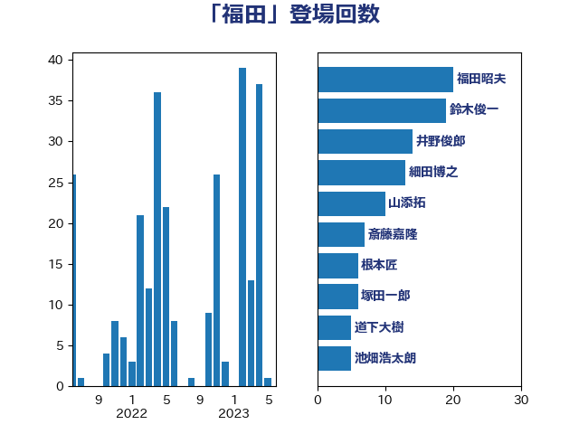

単語「福田」

| 福田昭夫 | 立憲民主党 | 20 回 |
| 鈴木俊一 | 自由民主党 | 19 回 |
| 井野俊郎 | 自由民主党 | 14 回 |
| 細田博之 | 自由民主党 | 13 回 |
| 山添拓 | 日本共産党 | 10 回 |
| 斎藤嘉隆 | 立憲民主党 | 7 回 |
| 根本匠 | 自由民主党 | 6 回 |
| 塚田一郎 | 自由民主党 | 6 回 |
| 道下大樹 | 立憲民主党 | 5 回 |
| 池畑浩太朗 | 日本維新の会 | 5 回 |
| 山口俊一 | 自由民主党 | 5 回 |
| 長峯誠 | 自由民主党 | 4 回 |
| 竹内真二 | 公明党 | 4 回 |
| 福島伸享 | 無所属 | 4 回 |
| 石田真敏 | 自由民主党 | 4 回 |
| 橋本岳 | 自由民主党 | 4 回 |
| 林芳正 | 自由民主党 | 4 回 |
| 打越さく良 | 立憲民主党 | 4 回 |
| 吉良よし子 | 日本共産党 | 4 回 |
| 野田佳彦 | 立憲民主党 | 3 回 |
| 谷田川元 | 立憲民主党 | 3 回 |
| 浜口誠 | 国民民主党 | 3 回 |
| 泉健太 | 立憲民主党 | 3 回 |
| 池下卓 | 日本維新の会 | 3 回 |
| 宮本徹 | 日本共産党 | 3 回 |
| 太栄志 | 立憲民主党 | 3 回 |
| 中根一幸 | 自由民主党 | 3 回 |
| 高木毅 | 自由民主党 | 2 回 |
| 逢坂誠二 | 立憲民主党 | 2 回 |
| 辻清人 | 自由民主党 | 2 回 |
| 辻元清美 | 立憲民主党 | 2 回 |
| 西村智奈美 | 立憲民主党 | 2 回 |
| 藤丸敏 | 自由民主党 | 2 回 |
| 葉梨康弘 | 自由民主党 | 2 回 |
| 牧原秀樹 | 自由民主党 | 2 回 |
| 海江田万里 | 立憲民主党 | 2 回 |
| 水岡俊一 | 立憲民主党 | 2 回 |
| 櫛渕万里 | れいわ新選組 | 2 回 |
| 斉藤鉄夫 | 公明党 | 2 回 |
| 後藤祐一 | 立憲民主党 | 2 回 |
| 市村浩一郎 | 日本維新の会 | 2 回 |
| 島村大 | 自由民主党 | 2 回 |
| 岡本三成 | 公明党 | 2 回 |
| 小西洋之 | 立憲民主党 | 2 回 |
| 井上哲士 | 日本共産党 | 2 回 |
| 上野賢一郎 | 自由民主党 | 2 回 |
| 黄川田仁志 | 自由民主党 | 1 回 |
| 馬場伸幸 | 日本維新の会 | 1 回 |
| 青山大人 | 立憲民主党 | 1 回 |
| 鈴木隼人 | 自由民主党 | 1 回 |
| 鈴木宗男 | 日本維新の会 | 1 回 |
| 野田聖子 | 自由民主党 | 1 回 |
| 赤羽一嘉 | 公明党 | 1 回 |
| 藤岡隆雄 | 立憲民主党 | 1 回 |
| 萩生田光一 | 自由民主党 | 1 回 |
| 笠井亮 | 日本共産党 | 1 回 |
| 福田達夫 | 自由民主党 | 1 回 |
| 石破茂 | 自由民主党 | 1 回 |
| 湯原俊二 | 立憲民主党 | 1 回 |
| 浅田均 | 日本維新の会 | 1 回 |
| 津島淳 | 自由民主党 | 1 回 |
| 杉尾秀哉 | 立憲民主党 | 1 回 |
| 末松義規 | 立憲民主党 | 1 回 |
| 木村英子 | れいわ新選組 | 1 回 |
| 岸田文雄 | 自由民主党 | 1 回 |
| 岩渕友 | 日本共産党 | 1 回 |
| 岡田直樹 | 自由民主党 | 1 回 |
| 山際大志郎 | 自由民主党 | 1 回 |
| 小渕優子 | 自由民主党 | 1 回 |
| 小倉將信 | 自由民主党 | 1 回 |
| 室井邦彦 | 日本維新の会 | 1 回 |
| 勝部賢志 | 立憲民主党 | 1 回 |
| 伊藤達也 | 自由民主党 | 1 回 |
| 仁比聡平 | 日本共産党 | 1 回 |
| 井上貴博 | 自由民主党 | 1 回 |
| 中谷元 | 自由民主党 | 1 回 |
| 中西祐介 | 自由民主党 | 1 回 |